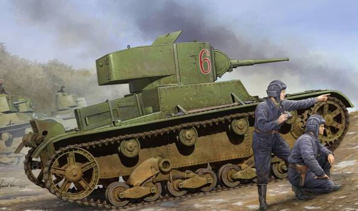

- Советский легкий танк Т-26.
- 
- В основе нашего героя лежал британский Vickers-MK-E, закупленный СССР еще в 1930 г. В те времена основным советским танком был легкий Т-18,
который мог выполнять ограниченное число задач и в техническом плане сильно отставал от зарубежных одноклассников. Советский Союз стремился дотянуть вооружение до западного уровня,
и изначально предполагалось создать на основе британской техники две модели – ТММ-1 и 2. В серию ни одна из этих моделей не пошла, и тогда в 1931 г. советское руководство принять
на вооружение британские танки, которых было постановлено обозначать Т-26, а на ленинградском заводе «Большевик» организовать производство аналогичных танков. Численный индекс при этом так и закрепился за новым танком.
- Броня Победы

- За годы войны было выпущено свыше 53 тысяч экземпляров Т-34 всех серий и модификаций. А выпуск свыше 6 тысяч лицензионных послевоенных танков в совокупности сделало «тридцатьчетверку» самым массовым танком, и это первенство сохраняется вплоть до наших дней.
- В ходе войны конструкция Т-34 постоянно модернизировалась и дополнялась новыми элементами. Основной задачей было удешевить стоимость и трудоемкость его производства. Вместе с тем старались увеличить его боеспособность.
На танке появляется командирская башенка, сама конструкция башен претерпевала изменения – от литой и сварной ранних типов до «гайки»; были попытки установки мощнейшего на тот момент 57-миллиметрового противотанкового орудия, упрощались катки и многое другое.
Выпускались и самоходки на удачном шасси Т-34 (Су-122, Су-85, Су-100), была огнеметная версия ОТ-34 и ремонтно-эвакуационная машина.
Военная техника Танк Т-34 (Презентация)